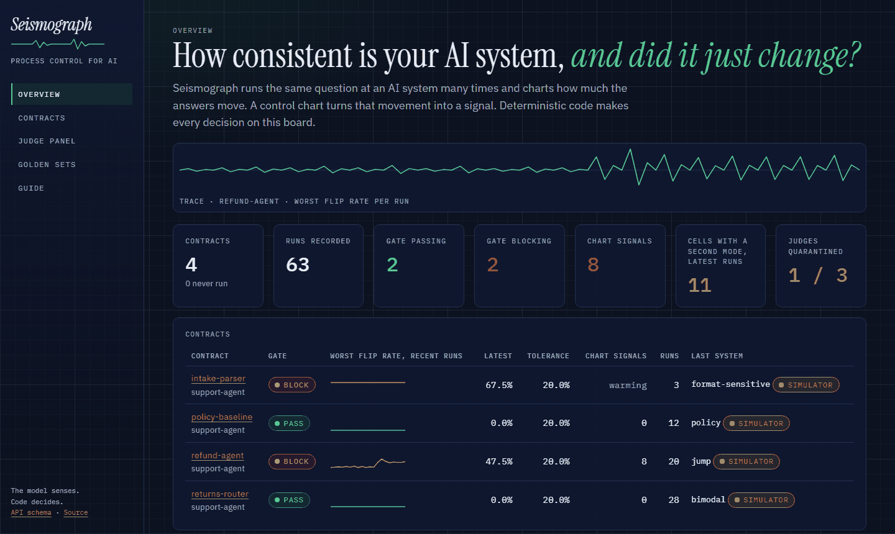
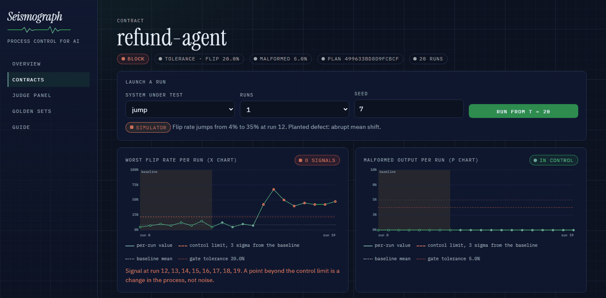
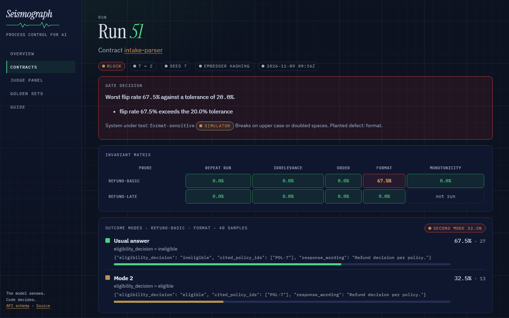
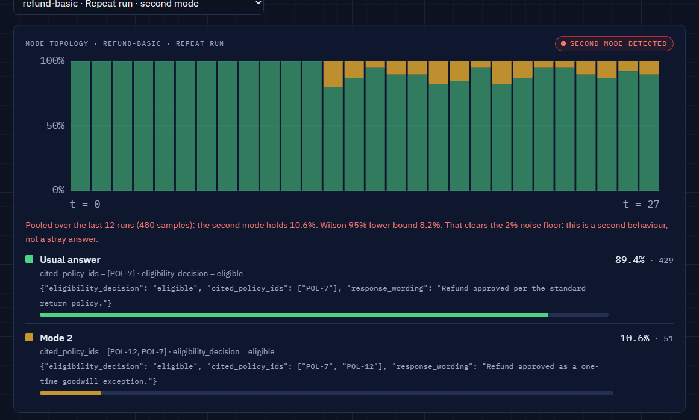
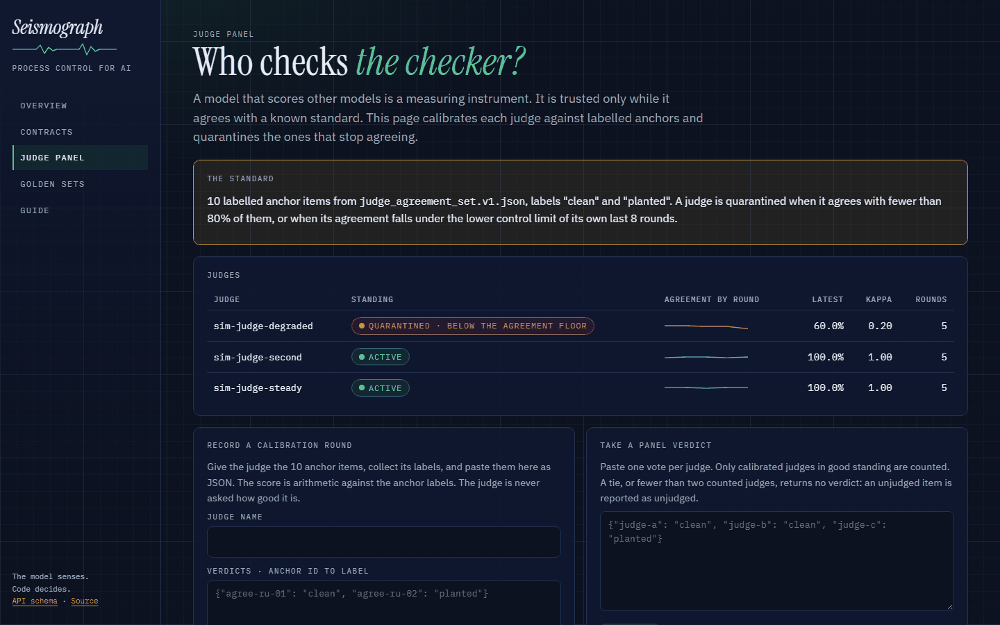
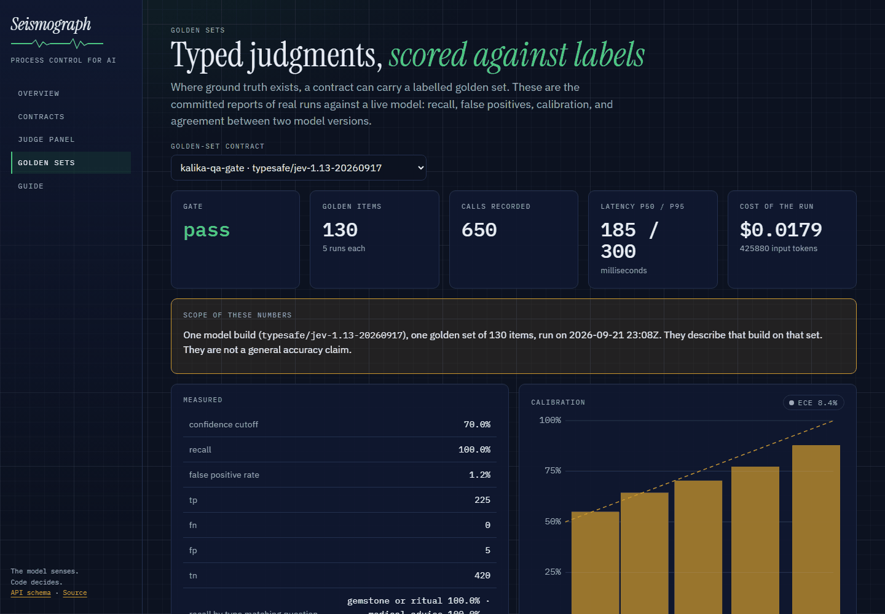

One good answer tells you little about a system that answers differently each time. Seismograph runs the same question many times, charts how much the answers move, and lets deterministic code decide whether a release ships. This guide walks the whole loop in seven steps.
The model senses. Code decides. No model issues a verdict anywhere in this loop.
You need Docker. Nothing in this guide needs an API key.
git clone https://github.com/nuwansamaranayake/Seismograph
cd Seismograph
cp .env.example .env
docker compose up -d --build
# open http://localhost:8000
In development the API runs without a token. Anywhere else it refuses to start without one, and the dashboard asks for it before showing a single number.

A contract is a YAML file that lives beside your prompt. It names fields of the answer, the changes to the input each field must survive, and the tolerance the gate enforces. Open Contracts, keep or edit the example, and press Register and compile.
contract: refund-full-invariants subject: support-agent invariants: - field: eligibility_decision # this field of the answer under: [repeat_run, irrelevant_context, reordering, format] relation: equal # must be the same under each change - field: cited_policy_ids under: [repeat_run] relation: jaccard_at_least # set overlap between runs threshold: 0.85 - field: eligibility_decision under: [monotonic] relation: monotonic # may only move in this direction order: [eligible, ineligible] run_policy: {samples: 20, configs: 1, confidence: 0.95} gate: {max_decision_flip_rate: 0.10, max_malformed_rate: 0.05} probes: - id: refund-basic input: "Customer bought a blender 12 days ago, unopened. Are they refund eligible?"
Nothing changes. The same input, asked again.
Catches noise, drift over time, malformed output.
One unrelated sentence is added before or after.
Catches a system swayed by text with no bearing on the question.
The sentences of the input are reordered.
Catches a system that stops reading at the question mark.
Same words, different case, spacing and line breaks.
Catches a brittle parser in front of the model.
A ladder of inputs along one quantity, such as days since purchase.
Catches an answer that moves the wrong way.
A model proposes rewordings. Code accepts only those that keep every number.
Catches a decision that depends on phrasing.
A perturbed answer is compared with the answer to the unperturbed input. If every variant is wrong in the same way, the variants agree with each other perfectly, and that still counts as a failure.
Your system is any Python object with one method. It receives the probe text and returns JSON text carrying the fields your contract names.
# my_app/eval.py import json class RefundAgent: def run(self, probe_input: str, t: int, rng) -> str: answer = call_my_agent(probe_input) # your LLM application return json.dumps({ "eligibility_decision": answer.decision, "cited_policy_ids": answer.policies, "response_wording": answer.text, }) sut = RefundAgent()
To learn the instrument first, use the built-in simulators. Each is a small program with one defect planted on purpose, so you can watch the instrument catch a defect you know is there. They carry a simulator tag everywhere they appear. Nothing they produce is a measurement of a real system.
| Simulator | What is planted | Which view shows it |
|---|---|---|
policy, stable | Nothing. A healthy system. | Every view stays quiet |
jump, drift | The flip rate rises at run 12, at once or as a ramp | Control chart |
flaky | 15% of outputs are not valid JSON for a stretch | Malformed chart |
distractible, order-sensitive, format-sensitive, non-monotonic | One broken invariant each | Invariant matrix |
bimodal | One answer in ten takes a second route to the same decision | Mode topology |
Every screenshot in this guide was recorded by one command against a fresh instance.
python scripts/seed_demo.py # four contracts, four simulators, same seeds every time
Open the contract and launch runs. Each run is one point. The first eight set the baseline. From the ninth on, each point is judged against limits computed from that baseline.

The gold line is not a target you chose. It is where your own baseline says ordinary noise ends. The red dotted line is the tolerance you declared in the contract. They answer different questions: did the process change, and is it still good enough to ship.
The invariant matrix shows one run cell by cell: probes down, changes to the input across. Zero means the answer held. A red cell names the exact condition under which your system stops being consistent. A dashed cell was not measured, which is not the same as holding.

An average hides shape. A system can keep its decision field perfectly stable while one answer in ten reaches that decision by a different route. The mode view groups answers by their signature over the invariant fields and pools a window of runs, so a small mode that keeps coming back is reported with a confidence bound.

The same engine runs as one command, and as a GitHub check on every pull request. It writes a summary a reviewer can read without opening a dashboard.
seismo gate --contract contracts/refund.yaml --sut my_app.eval:sut --points 12
# .github/workflows/seismograph.yml
on: [pull_request]
jobs:
gate:
runs-on: ubuntu-latest
steps:
- uses: actions/checkout@v4
- uses: nuwansamaranayake/Seismograph@main
with:
contract: contracts/refund.yaml
sut: my_app.eval:sut
| Exit code | Meaning | What the pipeline does |
|---|---|---|
| 0 | Every declared tolerance held | The check passes |
| 1 | A tolerance broke, or the chart signalled with --fail-on alarm | The check fails with the reasons listed |
| 2 | The gate could not be evaluated: bad contract, unknown system, nothing measurable | The check fails. It is never read as a pass |
A judge model is an instrument too. The judge panel scores each judge against labelled anchor items, with an interval and a chance-corrected kappa. A judge that falls under the agreement floor, or drifts from its own baseline, is quarantined. Its vote is excluded by name, and a panel left without a quorum returns no verdict.

A contract can carry a golden set: items a person labelled. The golden sets page shows the committed reports of real runs against a live model, with recall, false positives, a reliability diagram, and agreement between two model versions. Each report states the one model build and the one set it describes.

| Your question | Open | Read |
|---|---|---|
| Did anything change? | Overview | Chart signals and the trace strip |
| When did it change? | Contract, control chart | The first red point after the baseline |
| Under what condition does it break? | Contract or run, invariant matrix | The red cell: probe and perturbation |
| Is it noise or a second behaviour? | Contract, mode topology | The pooled share and its lower bound |
| Can I trust the judge that scored it? | Judge panel | Standing, agreement by round, kappa |
| May this build ship? | The CI check | The exit code and the listed reasons |
Seismograph detects an abrupt mean shift of 1 sigma or larger in the monitored statistic within a median of 5 monitored points (40 samples per point) at a false alarm rate of 0.017 per point, and it misses below that: a 0.5 sigma shift is caught about half the time (0.50, 95% CI 0.33-0.67) and a 0.25 sigma shift about two times in five (0.43, 95% CI 0.27-0.61).
| Abrupt shift in the flip rate | Detected | Sensitivity | 95% CI | Median latency |
|---|---|---|---|---|
| 0.25 sigma | 13/30 | 0.43 | 0.27-0.61 | 5 points |
| 0.5 sigma | 15/30 | 0.50 | 0.33-0.67 | 5 points |
| 1 sigma | 29/30 | 0.97 | 0.83-0.99 | 5 points |
| 1.5 sigma | 30/30 | 1.00 | 0.89-1.00 | 3 points |
| 2 sigma | 30/30 | 1.00 | 0.89-1.00 | 2 points |
| 3 sigma | 30/30 | 1.00 | 0.89-1.00 | 0 points |
False alarm rate 0.0167 (95% CI 0.0108 to 0.0256) per monitored point. Rows in red are documented misses: the lower bound of their interval is under 0.80. Reproduce every number with python scripts/eval.py.
Seismograph is open source under Apache 2.0. Source: github.com/nuwansamaranayake/Seismograph